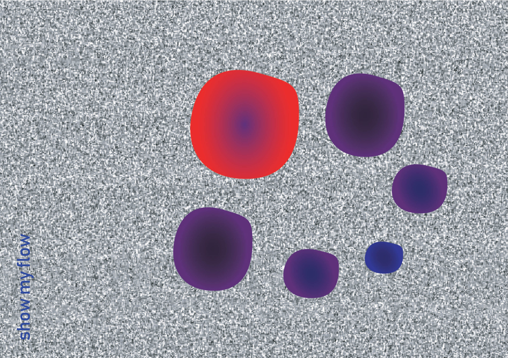

miroir miroir
Les menstruations sont invisibilisées dans notre société et le projet Miroir Miroir, au travers d'un objet décalé, entend les rendre visibles et normales. En rapprochant la boule de cristal de l’écran numérique, il s'agit d’associer la technologie à une forme de magie. La gestion des cycles menstruels, notamment au travers d'une application mobile s'apparente à une pratique de divination. Miroir Miroir affiche donc l’évolution du cycle menstruel au travers d’une vague colorée. Un geste de la main sur la sphère permet de révéler une information plus précise.
workshop Stranger Screens, Université Jean Jaurès, Toulouse, avec Louise Drulhe, Raphaël Bastide, Anthony Masure, 2018
